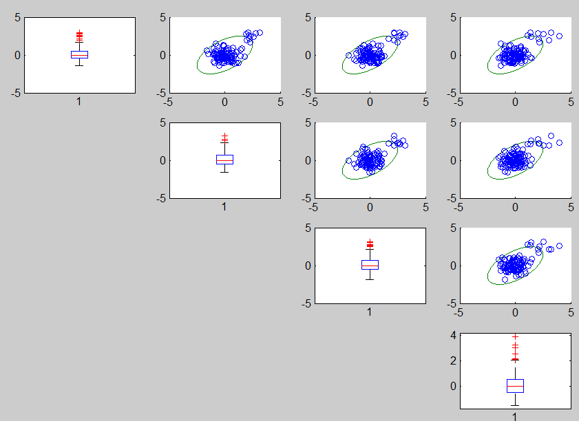

Robust bivariate analysis using robust contours
To find the initial subset for the forward search we fit a robust ellipse to each bivariate scatterplot, scale the ellipse and then take the observations in the intersection of all scaled robust ellipses as our starting point.
Example 1
In this example we use normal contaminated data to show the effect of using robust and unrobust estimate of scale. .
The code below generates the contaminated data and produces confidence ellipses for pair of variables.
% Simulate the data
n=100;
p=4;
state1=141243498;
randn('state', state1);
Y=randn(n,p);
kk=[1:10];
Y(kk,:)=Y(kk,:)+4;
% Produce robust ellipses (based on robust estimates of location and scale)
unibiv(Y,'plots',1,'robscale',1);
Using robust estimates of the centroid and of the scale the contours clearly highlight
the absence of correlation among the variables. Notice that the contours
are not effected by the presence of the contaminated observations.

unibiv(Y,'plots',1,'textlab',1,'robscale',5);

Example 2
In this second example we construct a robust bivariate 99% confidence ellipses for each pair of variables for the heads data
load('head')
unibiv(head.data,'plots',1,'rf',0.99);